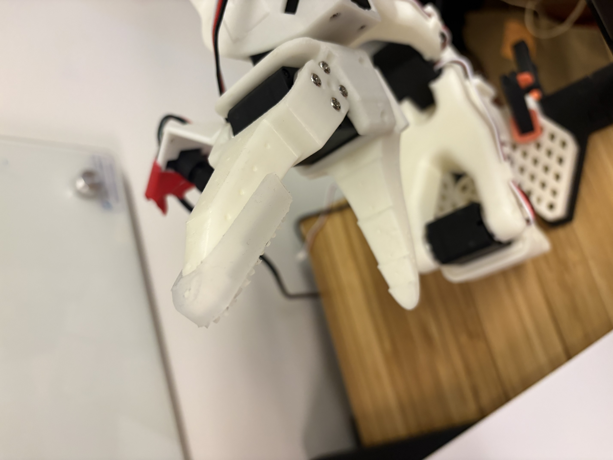
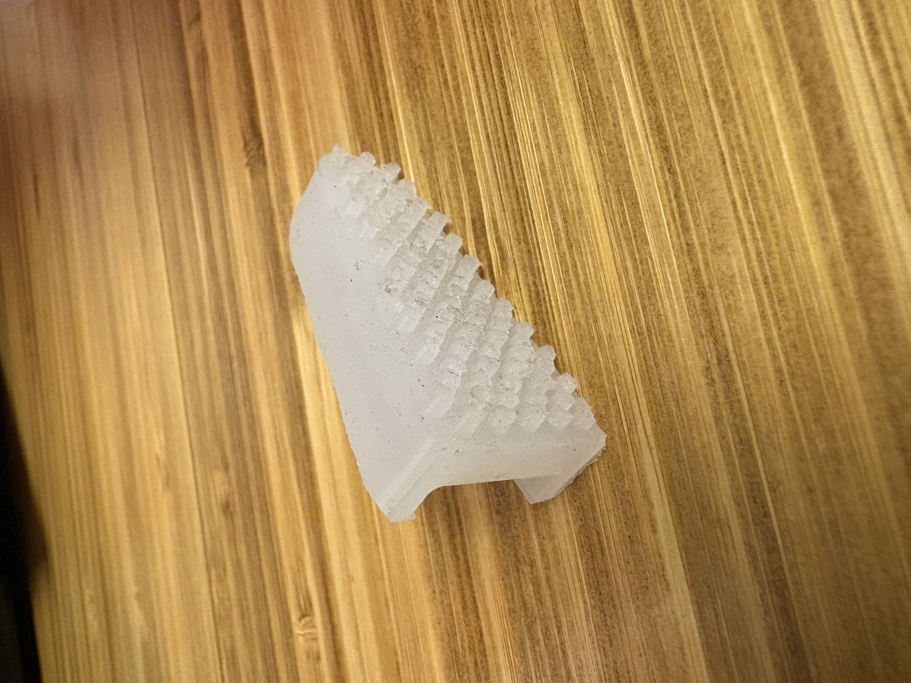

Building cheap, scalable tactile sensors that can run on any humanoid. The goal isn't a one-off research prototype — it's sensors that are deployable across platforms, generating the data needed to train the next generation of contact-aware manipulation models.
Hardware Prototype






The Problem
Humanoid robots can't do contact-rich manipulation reliably. Not because the models aren't good enough — but because there's almost no tactile training data. And there's no tactile training data because there are almost no cheap, deployable sensors to collect it with. A loop nobody has broken yet.
No tactile data
Models can't learn touch without a real dataset to train on. Vision-only manipulation fails on deformable objects, in-hand reorientation, and anything requiring force estimation.
No cheap sensors
Existing tactile sensors (GelSight, DIGIT, AnySkin) cost hundreds of dollars per fingertip. At that price point, you can't instrument a full hand, let alone a fleet.
No supporting infrastructure
Even with sensors, the model architecture and dataset format for tactile learning hasn't been standardized. Every lab reinvents the stack.
The Approach
Vision-based tactile sensing
Using a camera embedded in a soft silicone fingertip. Contact deforms the elastomer surface, and the camera captures those deformations as high-resolution contact images. The same principle as GelSight — but designed from the start for low BOM cost and manufacturability at scale.
Built for LeRobot SO-101
The sensor integrates directly with the SO-ARM101 / LeRobot SO-101 platform. This means any lab or developer already running LeRobot can add tactile sensing without custom integration work.
Generating the dataset
The hardware is the means, not the end. The goal is a large-scale tactile manipulation dataset — contact images, force estimates, and paired action sequences — that can be used to train and fine-tune VLA models with touch awareness.
Sensor Design


Technical Specs
Sensing
- Modality: Vision-based optical tactile (camera + elastomer)
- Resolution: ~160×120 contact image per fingertip
- Response time: <10ms at 30fps
- Detects: Contact location, normal force, shear, slip, surface texture
Hardware
- Camera: Miniature wide-angle module, fits within standard fingertip geometry
- Elastomer: Custom-cast silicone with marker pattern for deformation tracking
- PCB: Custom board for power, camera interface, and LED illumination control
- Target BOM: Sub-$30 per fingertip at small volume
Integration
- Platform: SO-ARM101 / LeRobot SO-101 (drop-in compatible)
- Interface: USB-C or SPI, configurable
- Software: LeRobot-compatible dataset format for direct training integration